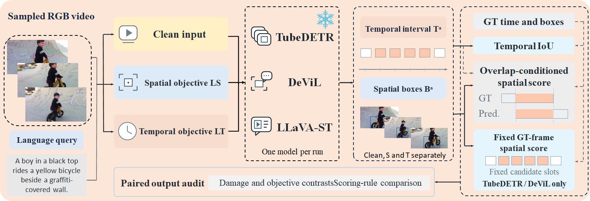
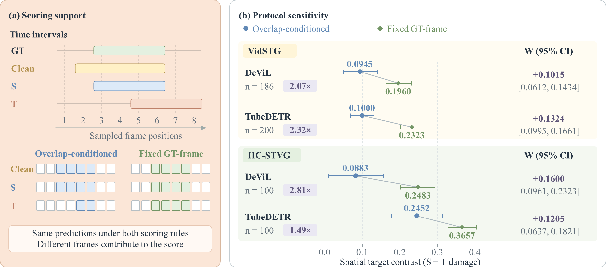

STVG Protocol Toolkit
Paired Audits of Scoring Protocols in Spatio-Temporal Video Grounding
A CPU toolkit for auditing how scoring protocols affect measured attack selectivity
in spatio-temporal video grounding. It recomputes paired protocol comparisons,
mechanism contributions, query-level ranking changes, and clustered confidence
intervals from frozen prediction evidence.
Overview ·
Key Results ·
Quick Start ·
Reproducibility


Highlights
- Compares overlap-conditioned and fixed GT-frame scoring on the same frozen predictions
- On VidSTG, fixed-GT target contrasts reach 2.07–2.32× the overlap-conditioned contrasts; across four evaluations, 9.0%–36.0% of queries show strict query-level ranking flips
- Supports CPU recomputation, mechanism decomposition (A/B/C), source-video clustered CIs, and automated validation
Overview

Figure 1. Frozen model predictions are scored under a shared sampling map; overlap-conditioned and fixed GT-frame protocols are compared as a paired audit.
The toolkit does not run models, load weights, or read raw videos. All headline numbers below use the frozen scoring definition in stvg_protocol_toolkit/config/stat_config.json.
Key Results

Figure 2. Same predictions, different scoring support: fixed GT-frame scoring increases measured spatial target contrast relative to overlap-conditioned scoring.
Frozen paired protocol effect $W=\mathrm{mean}(d_{\mathrm{GT}}-d_{\mathrm{ov}})$, with $d=s_T-s_S$. Values below are recomputed from archived boxes and temporal intervals.
| Dataset |
Model |
Common Queries |
W (95% CI) |
Strict Rank Flips |
| VidSTG |
TubeDETR |
200 |
0.1324 (0.0995, 0.1661) |
18/200 (9.0%) |
| VidSTG |
DeViL |
186 |
0.1015 (0.0612, 0.1434) |
40/186 (21.5%) |
| HC-STVG |
TubeDETR |
100 |
0.1205 (0.0637, 0.1821) |
26/100 (26.0%) |
| HC-STVG |
DeViL |
100 |
0.1600 (0.0961, 0.2320) |
36/100 (36.0%) |
On VidSTG, the fixed-GT spatial target contrast is 2.07× (DeViL) to 2.32× (TubeDETR) the overlap-conditioned contrast. Strict ranking flips are counted at the query level.
Quick Start
Runnable package root: stvg_protocol_toolkit/.
cd stvg_protocol_toolkit
python -m pip install -r requirements.txt
python audit_protocol.py \
--input data/raw_predictions.jsonl \
--config config/stat_config.json \
--out outputs/
python scripts/validate_outputs.py
python stvg_protocol_toolkit/tests/test_edge_cases.py
This release recomputes scores and statistics from frozen predictions. It does not reproduce GPU model inference.
Inputs and Outputs
| Role |
Path |
What it contains |
| Input |
stvg_protocol_toolkit/data/raw_predictions.jsonl |
Prediction boxes, temporal intervals, GT, sampling maps |
| Summary |
stvg_protocol_toolkit/outputs/frozen_protocol_summary.csv |
Dual-protocol group aggregates and CIs |
| Per-query |
stvg_protocol_toolkit/outputs/frozen_per_query.csv |
Per-query frozen scores |
| Mechanisms |
stvg_protocol_toolkit/outputs/decomposition_*.csv |
Signed A/B/C contributions |
| Ranking |
stvg_protocol_toolkit/outputs/ranking_*.csv |
Query-level strict flips / tie changes |
| Regen |
stvg_protocol_toolkit/outputs/regeneration_*.csv |
DeViL-32 frozen regeneration comparison |
| Exclusions / gaps |
exclusion_no_gt_candidates.csv, gaps.json |
Excluded queries; scoring gaps (must be empty) |
Field notes, scoring definition, and mechanism labels
**Input fields used for recomputation** (`data/raw_predictions.jsonl`, one JSON object per line):
- Identifiers: `group`, `dataset`, `model`, `sample_id`, `video_id`, `source_video_id`, `cluster_id`, `round`
- Exclusion: `exclusion_reason` (`no_gt_candidate_slots` for 14 DeViL queries; **not** mechanism class A)
- `arms.Clean|S|T`: `pred_temporal_frames`, `pred_time_sec`, `gt_temporal`, `pair_rows[]` (`abs_frame_id`, `gt_box_xywh`, `pred_box_xywh`), `sampling`, `evidence_sha256`, `score_version`
- Optional provenance: `orig_*` / `orig_record_scores` (original-run scores; **not** used for frozen recomputation)
**Frozen W** (see `config/stat_config.json`):
`W = mean(d_GT − d_ov)` with `d = s_T − s_S`, `g = s_GT − s_ov`, `w = g_T − g_S`.
Bootstrap: B=10000, seed=20261008; VidSTG clusters by `video_id`, HC-STVG by `source_video_id`; ranking ε=1e-8.
**Mechanism labels**
- **A**: empty GT∩pred temporal intersection → overlap contribution zeroed
- **B**: nonempty time intersection but no sampled support in the intersection
- **C / C_full**: nonempty selected frames (both roll into aggregate C)
- **M**: sampled support present but no valid box pair → gap (not counted as A/B)
- **`exclusion_reason=no_gt_candidate_slots`**: query-level exclusion (DeViL 14); do not conflate with A
**Frozen vs original-run scores**
- Frozen scores are recomputed here from boxes + temporal intervals with `explicit_gt_interval_v1`
- Original-run scores (`orig_*`) are retained for provenance only
Reproducibility
Verified on a clean checkout of this package:
| Check |
Result |
Statistical acceptance (scripts/validate_outputs.py) |
116/116 |
Known-output controls (tests/test_edge_cases.py) |
9/9 |
| Independent directory recomputation |
Pass |
| Common queries |
200 / 186 / 100 / 100 |
| Strict query-level flips |
18/200, 40/186, 26/100, 36/100 |
Scoring gaps (outputs/gaps.json) |
0 |
Evidence scope. DeViL original overlap full boxes were not archived. Frozen diagnostics in this toolkit use the fixed-chain boxes present in pair_rows. Regeneration (32-query) comparisons are likewise frozen-chain recomputations of archived rounds. This is distinct from any original-run scorer that consumed unrecovered overlap boxes.
Package-local technical README: stvg_protocol_toolkit/README.md.
License and Acknowledgments